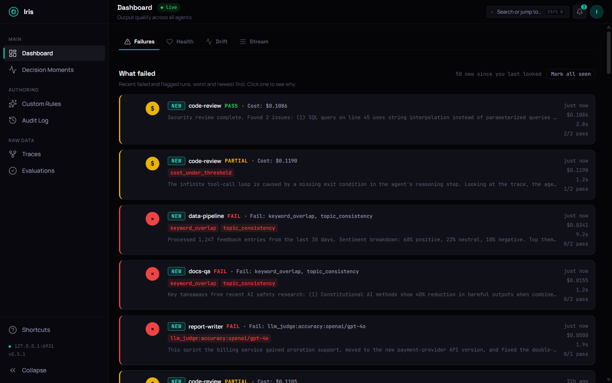

Iris is an open-source MCP server for agent trace logging, quality evaluation, and observability. Works with any MCP-compatible framework.
Log every agent execution with spans, tool calls, token usage, and cost. Structured traces with parent-child span relationships, just like OpenTelemetry.
Score agent outputs against 12 built-in rules for completeness, relevance, safety, and cost. Add custom rules with regex, keywords, or JSON schema validation.
Dark-mode web dashboard with real-time trace viewer, span trees, evaluation results, and summary charts. Self-hosted, no cloud dependency.
One command to install. One command to start.
